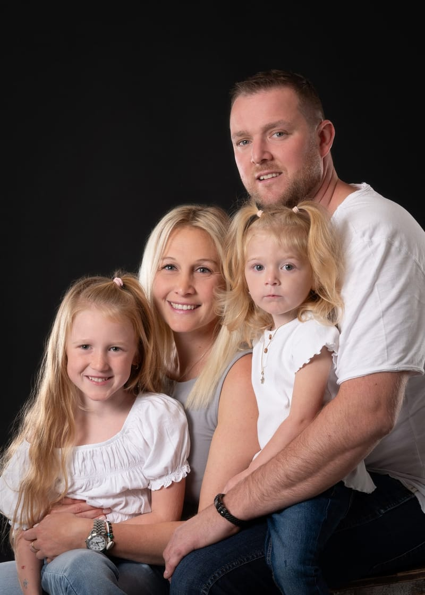
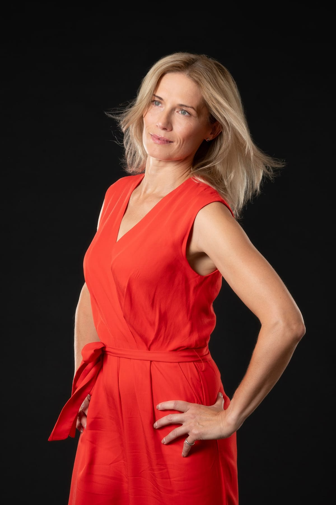
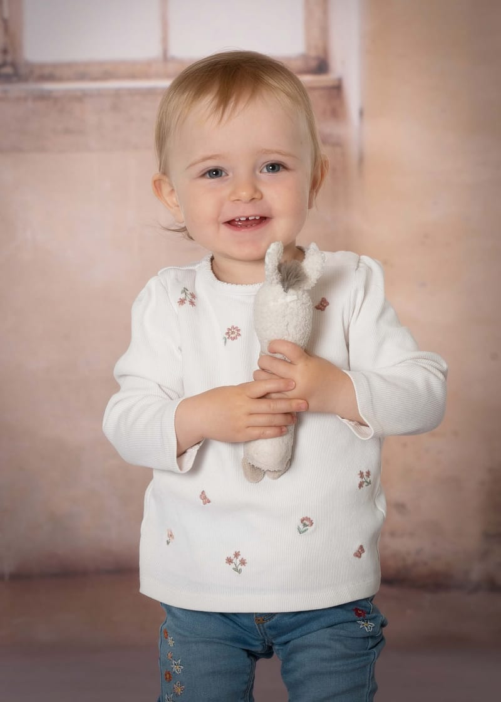
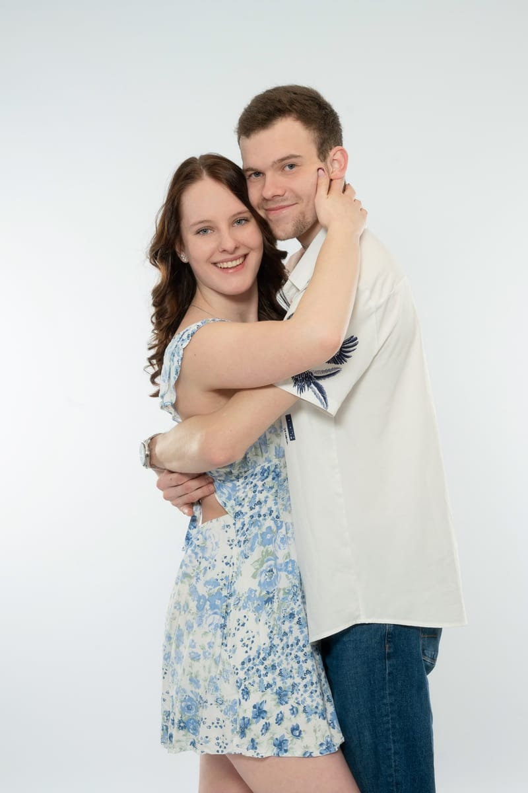
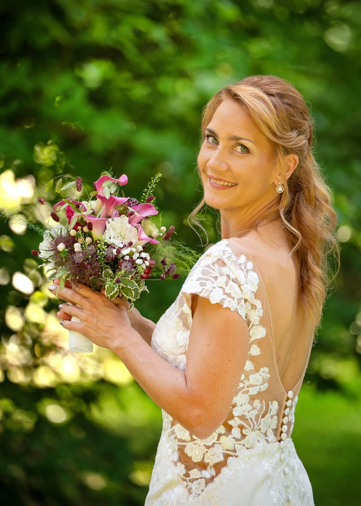
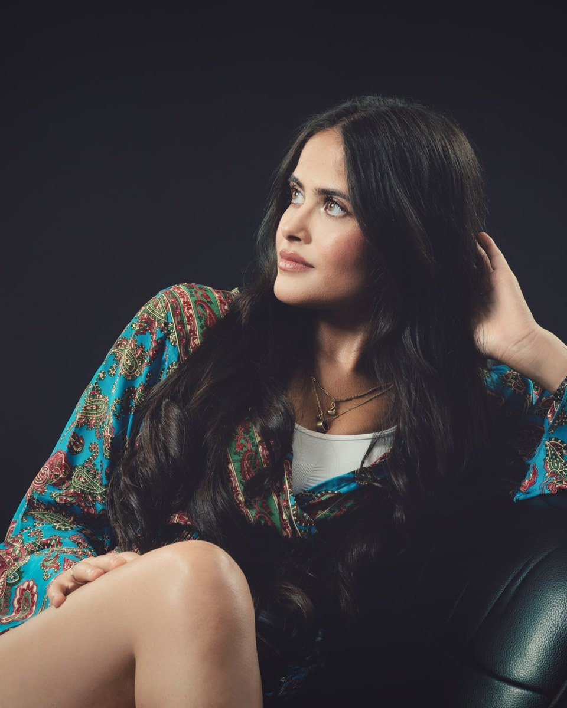
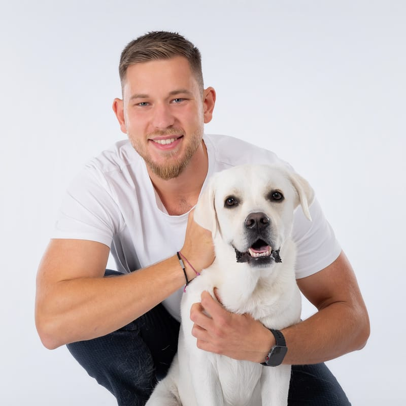

Privat
Fotoprofile Katrin Bernhard
Portraits, Familien- und Businessfotos von Fotografenmeisterin Katrin Bernhard. Bilder, die zeigen, wie Sie wirklich sind.
Telefon: 08165 / 80 97 97
Über meine Arbeit
Ich fotografiere seit über 35 Jahren und habe ein feines Gespür für Menschen und ihre Vierbeiner entwickelt. In kürzester Zeit erkenne ich, was Sie gerade brauchen: Bei Kindern, ob sie Action oder Ruhe möchten, im Business-Bereich, ob Sie Anleitung, eine klare Position oder einfach Zeit zum Ankommen brauchen.
Jeder tickt vor der Kamera anders, und genau darauf stelle ich mich mit Empathie, Feingefühl und Herz ein. So fühlen Sie sich wohl, die Bilder zeigen Sie, wie Sie wirklich sind, und am Ende sagen Sie: „Das hat sogar richtig Spaß gemacht.“
Katrin Bernhard, Fotografenmeisterin
Leistungen

Privat

Privat
Privat

Privat

Privat

Privat

Privat
Business
Business
Passfotos und Bewerbungsfotos: Wählen Sie Ihren Termin direkt online aus.
ab 25 €
ab 45 €
Über mich
Fotografenmeisterin
Viele, die sich sonst nicht gern fotografieren lassen, sind am Ende überrascht, wie schön ihre Bilder geworden sind. Viele Familien begleite ich seit Jahren, vom Babybauch über die Einschulung bis zur Hochzeit.
Über michKundenbewertungen
Vor Ort
Landkreis Freising, Landkreis Erding, Landkreis München
Eching, Hallbergmoos, Freising, Garching, München, Moosburg, Mainburg
Kontakt
Termine nach Vereinbarung
Termin buchen